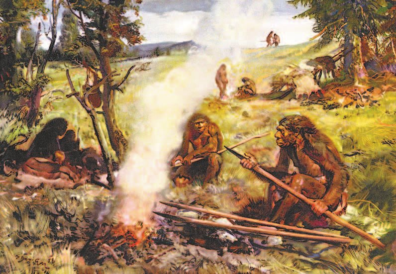
Мифы, легенды, наука
Люди всегда спрашивали: откуда взялся человек? Где он появился — в одном месте или сразу в нескольких?
В древних отвечали по-разному. Человека слепили боги из глины, вырезали из кости или вырастили из зерна. Или он произошёл от животного — медведя, обезьяны, черепахи.
Потом появились две науки: — она ищет следы прошлого в земле, и — наука о человеке. Учёные нашли кости, остатки жилищ и орудия труда — и по ним восстановили, как жили древнейшие люди.
В середине XIX (19) века англичанин предположил: предками человека были обезьяноподобные существа, жившие в глубокой древности. Он первым описал — долгий путь развития всего живого.
После Дарвина учёные нашли много древних человекоподобных существ. Но не все они оказались нашими предками: многие ветки были тупиковыми и до не дошли.
Где и когда появился человек? Это происходило в одном месте на Земле или их было несколько? Такие вопросы всегда интересовали людей. В древних и легендах рассказывается, как разные народы объясняли появление человека: его создали боги (вылепили из глины, сотворили из воды, вырезали из кости или вырастили из зерна) или он произошёл от животного (медведя, обезьяны, черепахи). В религиозных текстах повествуется, что первых людей по своему образу и подобию сотворил Бог.
Так было в древности. Многое изменилось с появлением наук и . Материалы, найденные учёными-археологами и учёными-антропологами при раскопках (останки человекоподобных существ, остатки первых жилищ, орудия труда и др.), помогли воссоздать картину жизни древнейших людей.
В середине XIX (19) века английский учёный высказал предположение, что обезьяноподобные существа, которые жили в глубокой древности, и были предками человека. Дарвин считал, что все живые существа на Земле прошли долгий путь развития. Он впервые сформулировал теорию путём естественного отбора.
После появления дарвиновской теории, связанной с возникновением человека, произошли большие изменения. Учёные обнаружили ряд видов и групп древних человекоподобных существ, которые остались тупиковыми и не участвовали в последних этапах формирования человека современного вида — («хомо сапиенс» на латыни).
- Что рассказывают мифы о происхождении человека?
- Какие вопросы о происхождении человека обсуждают учёные?
1. Чем ответ мифа отличается от ответа науки?
2. Что такое эволюция по Дарвину?
3. Почему не все древние человекоподобные существа — наши предки?
Основные этапы развития человека
— это время от появления человека до того, как он начал пользоваться металлом. На него приходится 99 % всей истории человечества.
Сначала орудия были грубые рубящие камни. Со временем появилось сложное и разное охотничье оружие.
Примерно 45 тысяч лет назад, в конце , появился человек современного вида. Он умел жить почти везде, делал орудия из камня, кости и дерева, строил жилища под разный климат, рисовал на стенах пещер и вырезал фигурки из кости.
Период с момента появления человека до начала использования им металла называют . На него приходится 99 % продолжительности всей истории человечества. Развитие культуры на протяжении этого времени шло от одной стадии к другой, от грубых рубящих каменных орудий до сложного и разнообразного охотничьего вооружения.
На последней стадии древнего каменного века (), примерно 45 тысяч лет назад, появился человек современного физического типа. Он обладал навыками, позволявшими заселить уже все экологические ниши. В это время для производства орудий использовалось не только каменное сырьё, но и кость и дерево. Обычным стало строительство жилищ, приспособленных к разным климатическим условиям. Высокого уровня достигла духовная культура; дошли до наших дней высокохудожественные образцы наскального искусства и произведения мелкой скульптуры из кости.
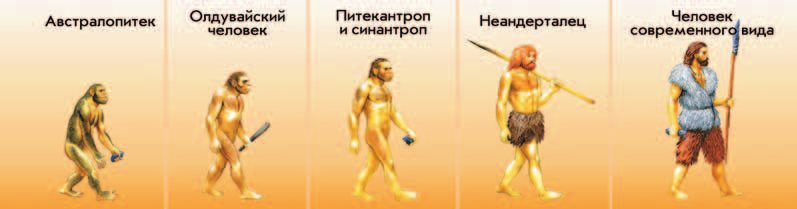
Самые древние останки нашли в Южной Африке в 1924 году. Это — «южная обезьяна». Он жил примерно 6,5—1 миллиона лет назад, и его считают предшественником первых людей.
Около 2,5 миллиона лет назад появился . Он первым стал брать камни и палки как простые орудия. Его останки нашёл в Африке английский археолог в 1960 году.
Самые древние останки человекоподобного существа были обнаружены в Южной Африке в 1924 году. Учёные назвали это существо , то есть «южная обезьяна». Жило оно примерно 6,5—1 миллион лет назад, его считают предшественником первых людей.
Около 2,5 миллиона лет назад от австралопитеков произошла разновидность более высокоразвитых существ, которые умели использовать природные материалы (камни, палки) в качестве простых орудий труда. Останки такого существа, его назвали «хомо хабилис» — «», в 1960 году обнаружил английский археолог в Олдувайском ущелье на востоке Африки («Олдувайский человек»).
Часто на рисунках изображали волосатых сгорбленных полуобезьян. Но уже древнейших людей от животных отделяла непреодолимая пропасть. Древнейшие люди рано лишились волосяного покрова. Отсутствие густой шерсти и гладкая кожа позволяли людям охотиться в разгар жаркого дня, когда большинство хищников спит.
Примерно миллион лет назад появился человек прямоходящий. Его останки на острове Ява нашёл антрополог из Нидерландов : часть черепа, зубы и бедренную кость — с чертами и обезьяны, и человека. Существо назвали — «обезьяночеловек». Он был выше человека умелого и умел делать из камней ножи, рубила, наконечники копий.
В 1929 году в Китае нашли останки — «китайского человека». По строению тела он близок питекантропам.
Приблизительно миллион лет назад появился новый вид человекоподобного существа — человек прямоходящий. Его останки нашёл антрополог из Нидерландов на острове Ява. В ходе раскопок учёный обнаружил останки древнего существа (часть черепа, зубы и бедренную кость) с чертами и обезьяны, и человека. Дюбуа высказал предположение, что найденное существо представляет переходную форму от обезьяны к человеку. Существо назвали , то есть «обезьяночеловек». Питекантроп был выше человека умелого, обладал навыками делать из камней ножи, рубила, наконечники копий.
Останки («китайский человек») были обнаружены на территории Северо-Восточного Китая в 1929 году. По физическому строению синантропы близки питекантропам.
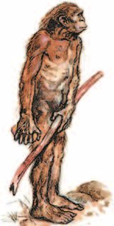
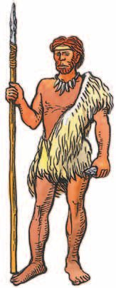
— это мы с тобой. Считается, что он появился около 300 тысяч лет назад.
В 1856 году в Германии, в долине Неандерталь, нашли останки существа, жившего 300—40 тысяч лет назад. Его назвали . Мозг у него был как у современного человека, но лоб покатый, над глазами — массивные надбровные дуги, а черепная коробка низкая. Неандертальцы жили в пещерах и охотились на мамонтов.
— наши прямые предки. Их назвали по пещере Кро-Маньон во Франции, где в 1868 году нашли первые останки. Сформировались они в Африке, а в Европе появились около 40 тысяч лет назад: высокие, около 180 сантиметров, смуглые, с прямым лбом и крупным мозгом. Внешне — уже совсем как мы.
Расселяясь по миру, люди современного вида встречались с неандертальцами и частично смешивались с ними. Поэтому в генах современного человека есть вклад и тех, и других. В конце концов на Земле остался только один вид людей — наш.
Самое древнее время в истории называют . Его делят на три части: палеолит — древний каменный век, — средний, — новый. Письменности не было, государства не было, деления на бедных и богатых тоже. Орудия делали из камня.
Считается, что (биологический вид, к которому принадлежим и мы) сформировался около 300 тысяч лет назад. В 1856 году в Германии, в долине Неандерталь, обнаружили останки существа, жившего 300—40 тысяч лет назад. Его назвали «». Он имел объём мозга, сравнимый с мозгом современного человека, покатый лоб, массивные надбровные дуги, низкую черепную коробку. Неандертальцы жили в пещерах, охотились на мамонтов.
Древнейших людей современного вида в науке часто называют «» — по названию места первой находки их останков в пещере Кро-Маньон во Франции в 1868 году. Люди этого вида сформировались в Африке, а в Европе появились примерно 40 тысяч лет назад. Кроманьонцы были высокими, около 180 сантиметров, смуглыми, имели прямой лоб, крупный мозг. Их останки найдены во всех частях света. Кроманьонцы (наши прямые предки) уже имели внешний облик, ничем не отличающийся от современного человека.
Расселяясь по миру, люди современного вида вступали в контакты с неандертальцами и частично смешивались с ними. В результате часть неандертальцев влилась в человечество современного вида, и в генетике современного человека присутствует вклад и тех и других. В конце концов на Земле остался только один вид людей — современный, остальные частью влились в него, частью вымерли.
Древнейший период человеческой истории получил название «». Учёные разделили историю этого общества на несколько периодов: палеолит — древний каменный век, — средний каменный век, — новый каменный век. Первобытные люди не знали письменности, не имели государства, среди них не было разделения на бедных и богатых. Основным материалом, из которого древние люди делали орудия, был камень.
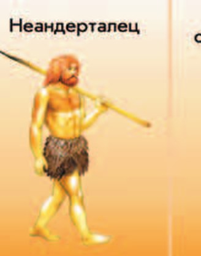
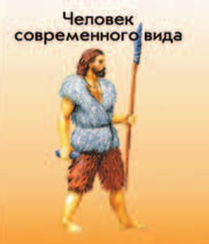
- Когда появился каждый из указанных в схеме типов древнего человека?
- Определите, какой из типов древних людей был более примитивным, а какой — более развитым. Аргументируйте свой ответ.
4. Почему этот период назвали именно каменным веком?
5. Чем питекантроп отличался от человека умелого?
6. Чем неандерталец отличался от кроманьонца внешне?
7. Почему в генах современного человека есть вклад неандертальцев?
Первобытность на территории современной России
Люди жили и там, где сейчас Россия, — больше 2 миллионов лет назад. Самые древние следы: Айникаб и Мухкай на Северном Кавказе, Кермек в Приазовье, Жуковское на Ставрополье.
Одновременно с неандертальцами на востоке России и в Восточной Азии жили . Их назвали по Денисовой пещере на Алтае, где нашли останки. У них были общие предки с неандертальцами.
Как выглядели денисовцы, наука пока не знает. Доказано только, что они были темнокожими, темноволосыми и темноглазыми.
Поселения древнего человека на территории современной России представлены многочисленными периода древнего каменного века. По современным научным данным, заселение территории нашей страны человеком произошло немногим более 2 миллионов лет назад. Такие археологические памятники этого времени, как Айникаб, Мухкай на Северном Кавказе, Кермек в Приазовье и Жуковское на Ставрополье, относятся ко времени начала освоения древнейшим человеком Евразии, включая современную территорию России.
Одновременно с неандертальцами на востоке территории России и в Восточной Азии жила другая, родственная им разновидность людей — так называемые . Их назвали так по Денисовой пещере на Алтае, где найдены их останки. У денисовцев были общие предки с неандертальцами, когда-то вышедшие из Африки.
Открытие денисовского человека считается одним из крупнейших научных достижений археологии и исторической генетики (науки об истории наследственности и изменчивости). Достоверно реконструировать внешний облик денисовского человека наука пока не может. Но уже доказано, что он был темнокожим, темноволосым и темноглазым.
Человек разумный пришёл на территорию России больше 40 тысяч лет назад. Самые древние нашли у села Костёнки в Воронежской области — некоторым около 45 тысяч лет, это раньше, чем в Западной Европе!
Там нашли орудия труда из бивня мамонта и костей крупных животных. Но интереснее всего — костяные украшения и искусно сделанные фигурки женщин. На одной из фигурок учёные нашли много украшений, в том числе магические амулеты, которые должны были защищать хозяйку.
Представители людей современного вида — человек разумный — появились на территории современной России более 40 тысяч лет назад. Самые древние на территории нашей страны археологические (так учёные называют места поселений и деятельности человека каменного века) найдены около села Костёнки в Воронежской области. Некоторые из этих стоянок были основаны около 45 тысяч лет назад (раньше, чем в Западной Европе!). Здесь были обнаружены орудия труда из бивня мамонта и костей крупных животных. Но больший интерес вызывают костяные украшения и искусно выполненные фигурки женщин. На одной из фигурок учёные обнаружили многочисленные украшения, в том числе магические амулеты, призванные защитить их обладательницу.
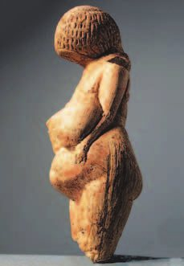
Долгое время учёные считали, что первобытные люди были бродячими охотниками. Однако в 1923 году советский археолог Пётр Ефименко обнаружил недалеко от села Костёнки остатки первобытных жилищ. Это дало возможность предположить, что охотники на мамонта вели оседлый образ жизни. В яме-хранилище тогда же нашли и первую женскую статуэтку из бивня мамонта. Находка произвела настоящую сенсацию в научном мире. Сейчас на месте раскопок находится археологический музей-заповедник «Костёнки».
Кроме Костёнок есть и другие стоянки: Сунгирь под Владимиром (25 тысяч лет назад), Хотылёво-2 в Брянской области, Авдеевская в Курской, Гагаринская в Липецкой, Зарайская в Московской, Мальта и Буреть в Иркутской.
На Сунгире нашли много орудий труда, оружия и изделий из рога, кости и бивня мамонта. Самая известная находка — «сунгирская лошадка».
Помимо Костёнок, на территории современной России найдены и другие стоянки первобытных людей. Например, Сунгирь под Владимиром (она появилась около 25 тысяч лет назад), Хотылёво-2 в Брянской области (26 тысяч лет назад), Авдеевская стоянка в Курской области (25 тысяч лет назад), Гагаринская стоянка в Липецкой области (около 24 тысяч лет назад), Зарайская стоянка в Московской области (23 тысячи лет назад), Мальта и Буреть в Иркутской области (23—25 тысяч лет назад) и др.
Во время раскопок на стоянке Сунгирь археологами было обнаружено множество образцов орудий труда, оружия, изделий из рога, кости и бивней мамонта. Самой известной археологической находкой стала так называемая «сунгирская лошадка» — миниатюрная фигурка из бивня мамонта.
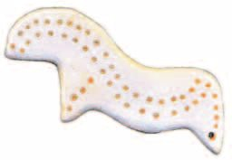
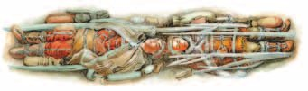
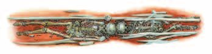
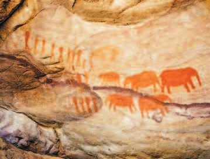
В 1954 году открыли стоянку в Каповой пещере в Башкирии. Её стены украшены рисунками древних животных, им больше 14 тысяч лет. Сейчас это музей-пещера Шульган-Таш.
В среднем каменном веке начал таять ледник. Люди расселились там, где освободилось ото льда. Реки, озёра и болота наполнились талой водой. Многие крупные животные вымерли, зато появилось много мелкой дичи и новых растений.
Кроманьонцы стали жить не только в пещерах: они строили жилища из дерева, камня, шкур и костей. Делали каменные и костяные орудия, уже сами добывали огонь, пользовались луком и стрелами, приручили собак, сооружали плоты, лодки и даже мосты.
В 1954 году была открыта стоянка древнего человека в Каповой пещере (Башкирия). Её стены украшены наскальными рисунками древних животных, их возраст превышает 14 тысяч лет. Рисунки впечатляют своими размерами и сохранностью. Увидеть вживую объект культурного наследия федерального значения в наши дни можно в музее-пещере Шульган-Таш.
В среднем каменном веке началось таяние ледника. Люди расселились на просторах, свободных ото льда. Реки, озёра и болота наполнились талой водой. Вымерли многие крупные животные, но появилось много мелкой дичи и новых растений. Изучение мезолитических стоянок Мурзак-Коба в Крыму, Попово в Архангельской области, Оленеостровский могильник в Карелии и др. свидетельствует, что кроманьонцы стали использовать для жизни не только пещеры, но и возводили себе жилища из дерева, камня, шкур и костей животных, изготовляли многие каменные и костяные орудия труда, умели сами добывать огонь, пользовались луком и стрелами, приручили собак, сооружали плоты, лодки и даже мосты.
На Среднем Урале, в Шигирском торфянике, нашли самую древнюю в мире деревянную скульптуру — Шигирского идола. Ему 12 тысяч лет, высота около 9 метров, сделан из расколотого ствола лиственницы и покрыт непонятными нам узорами.
Под Сергиевым Посадом в Московской области нашли самый древний из известных в мире мостов. Его построили 7,5 тысячи лет назад каменными топорами из берёзовых брёвен — без единого гвоздя. Ширина 2 метра, длина 5 метров.
Жилища среднего каменного века были лёгкие: из жердей, покрытый шкурами или берестой, а в центре — очаг для тепла и света. В горах селились под скалами и в гротах. Умерших хоронили на стоянках или в особых местах — .
На Среднем Урале, в Шигирском торфянике, обнаружена древнейшая в мире деревянная скульптура — Шигирский идол. 12 тысяч лет назад скульптура высотой около 9 метров была изготовлена из расколотого ствола лиственницы и покрыта непонятными для нас узорами.
К числу открытий, имеющих мировое значение, относится находка в Московской области около города Сергиева Посада остатков самого древнего из известных в мире на сегодня мостов. Его построили 7,5 тысячи лет назад при помощи каменных топоров из берёзовых брёвен, соединив их без единого гвоздя. Ширина моста была 2 метра, а длина — 5 метров.
Археологи и антропологи исследовали много поселений эпохи среднего каменного века, это небольшие сезонные стоянки. На некоторых из них, например на стоянке Иенево под Тверью и Беливо в Московской области, обнаружены следы лёгких наземных жилищ типа из жердей, которые покрывали шкурами животных или берестой, а в центре для обогрева и освещения устраивали очаг. В горных районах люди селились под скальными навесами или в гротах. Своих умерших хоронили как на самих стоянках, так и в специальных местах — .
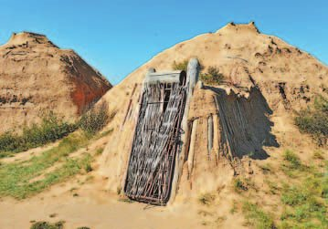
- Какие находки помогли учёным воссоздать процесс развития (эволюцию) человекоподобного существа?
8. Почему находка Петра Ефименко в Костёнках оказалась такой важной?
9. Почему о денисовцах известно так мало?
10. Что изменилось в жизни людей, когда начал таять ледник?
11. Что нового научились делать люди в среднем каменном веке?
Подведём итоги
- Что привело к выделению человека из животного мира?
- Что в облике древнейших людей общего с современными? Чем мы различаемся?
- Как древние люди находили пищу и защищались от опасностей дикой природы?
- Найдите на карте территории, где были обнаружены останки древнейших людей. На территории каких современных стран они находятся?
- Подумайте, почему древний человек начал использовать орудия труда. Какие это были орудия?
- Когда на территории современной России появились первые люди? Откуда мы знаем о них?
- Какие археологические находки на территории нашей страны кажутся вам наиболее интересными? Почему?
- Подумайте, как без развитой речи и письменности древние люди общались и передавали друг другу информацию.
Проверь себя
Нажимай по очереди — от самого древнего к самому близкому к нам.
1. Какие две науки помогли узнать, как жили древнейшие люди?
2. Кто первым сформулировал теорию эволюции?
3. Сколько времени всей истории человечества занимает каменный век?
4. Кто такие кроманьонцы?
5. Где нашли самые древние стоянки на территории России?
6. Чего НЕ было у людей среднего каменного века?
Расскажи вслух
Как учёные узнали о древнейших людях
- Раньше отвечали мифы: человека слепили боги или он произошёл от животного.
- Появились археология и антропология: раскопки, останки, жилища, орудия труда.
- Дарвин сформулировал теорию эволюции; после него нашли много древних видов, но не все они наши предки.
Основные этапы развития человека
- Австралопитек, 6,5—1 миллиона лет назад, Южная Африка, 1924 год.
- Человек умелый — 2,5 миллиона лет назад, нашёл Луис Лики; питекантроп — около миллиона, нашёл Эжен Дюбуа; синантроп — Китай, 1929 год.
- Человек разумный — около 300 тысяч лет назад: неандерталец, потом кроманьонец.
Неандертальцы и кроманьонцы
- Неандерталец: долина Неандерталь, 1856 год; жил 300—40 тысяч лет назад; покатый лоб, надбровные дуги; жил в пещерах, охотился на мамонтов.
- Кроманьонец: пещера Кро-Маньон, 1868 год; в Европе 40 тысяч лет назад; высокий, прямой лоб, крупный мозг.
- Они встречались и смешивались, поэтому в наших генах есть вклад и тех, и других.
Первобытные люди на территории России
- Заселение больше 2 миллионов лет назад: Айникаб, Мухкай, Кермек, Жуковское.
- Денисовцы с Алтая — родня неандертальцев, облик неизвестен.
- Костёнки, Сунгирь, Зарайск, Мальта; находки: Венера из Костёнок, «сунгирская лошадка», рисунки Каповой пещеры.
Что изменилось в среднем каменном веке
- Ледник начал таять, люди расселились, вымерли крупные животные, появилась мелкая дичь.
- Новые умения: сами добывали огонь, лук и стрелы, приручили собак, плоты, лодки, мосты.
- Жилища типа чума из жердей со шкурами и очагом; Шигирский идол и древнейший мост под Сергиевым Посадом.